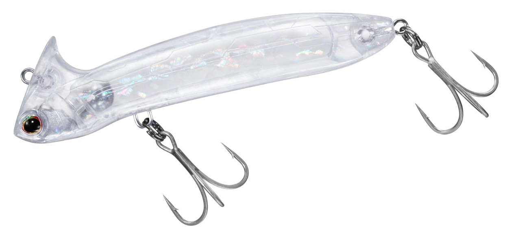
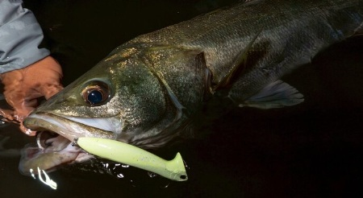
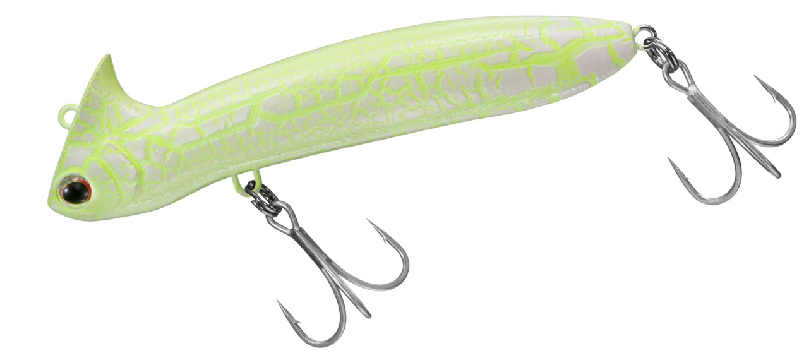
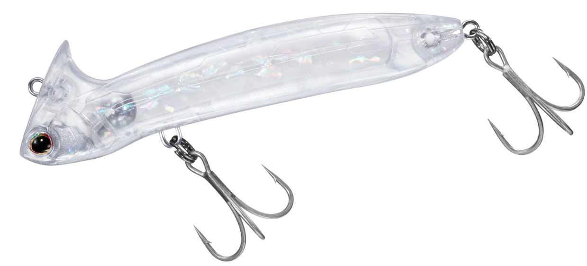
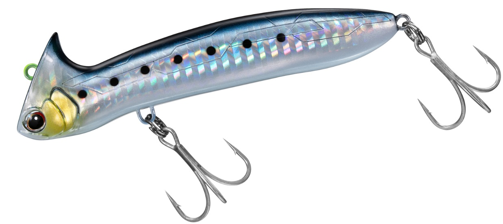
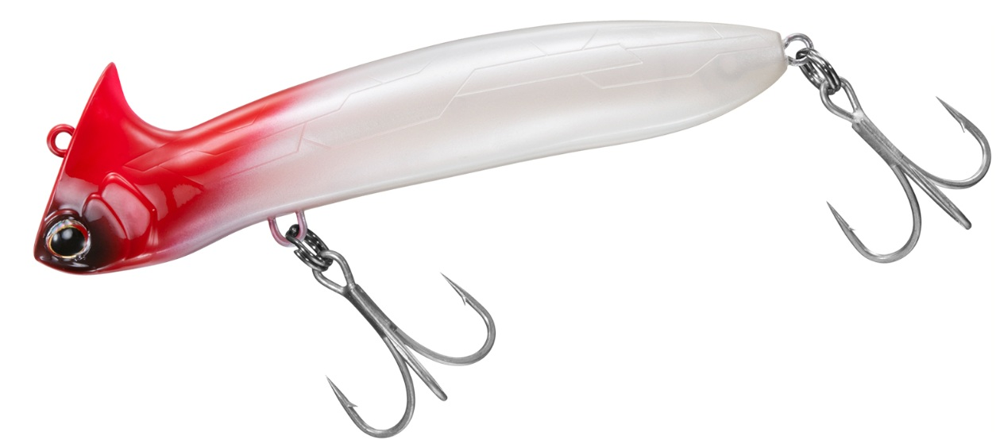

METOM96S(メトム96)
METOM96S（通称：メトム96）はDAIWAのシンキングミノーです。
メトムはロールに超特化した新ルアー。スレたランカーシーバスを狙い撃ち。
釣り方やオススメカラーなどを解説。

画像出典:DAIWA公式X
スペック
- メーカー
- DAIWA
- 長さ
- 96 mm
- 重さ
- 21.8 g
- フック
- #3×2
- リング
- #3
- レンジ
- 20cm～
- タイプ
- ミノー
- 沈下タイプ
- シンキング
- アクション
- ローリング
- ターゲット
- シーバス
- 価格
- 1800円(税抜)
- 発売日
- 2026-05-01
- 開発者
- 世良勇樹
メトム96Sの特徴
浮き上がりを抑え、理想のレンジを完遂する。頭上のリップが導く、新次元のメトロノームアクション。
-
高ピッチロール特化型「メトロノームアクション」
ウォブリング（お尻を振る動き）を一切排除し、ロールアクションのみを追求。
細かく頭を振るハイピッチなロールが、スレた大型魚に効果を発揮します。 -
浮き上がりを抑えるヘッド上部の「特殊リップ」
ヘッドの上側に大型のリップを配置した独自構造により、水を上側に受け流して浮き上がりを抑制。
水面直下20cmからボトム付近まで、アングラーが意図したレンジを正確にキープできます。 -
大型フック搭載と優れた遠投性能
9cmミノーでは異例の#3の大型フックを標準装備しており、メータークラスのシーバスとの強引なファイトが可能。
重心移動システムと空気抵抗を逃がすボディ形状により、最高峰の飛距離を誇ります。
メトム96Sの使い方・得意な状況
基本はただ巻き。速度はスロー～ファストリトリーブまで対応しています。
レンジコントロールはロッドの角度や巻き速度で制御できます。
得意なシチュエーションは、 大型ベイトを飽食している秋以外の、気難しいランカーを狙う局面で特に高い効果を発揮します。
また、通常のミノーではアクションが破綻してしまうような激流の中でも動きが安定しています。
ワンポイント
「ストップ＆ゴー」や「リフト＆フォール」で「食わせの間」を作るのが極めて有効です。 バイブレーションのリフト＆フォールよりもスローに誘えるため、特にナイトゲームにおいて魚がルアーを追いきれない状況で「食わせの間」を長く取ることができ、連発やランカーの捕食スイッチを入れるきっかけになります。

画像出典:DAIWA公式HP
人気カラー
カラーラインナップは全8色。中でも人気のカラーを抜粋しました。
カラー選びの参考にしてみてください。

モーニンググローリー光の当たり方で大きく色が変わる代表カラー。マズメ時とナイトゲームで抜群のアピール。

ジェリーフィッシュＵＶクリアボディにUVコート。澄潮や干潟などのハイプレッシャーで実績。

チャートヘッドイワシ王道のイワシカラー。チャートヘッドでアングラーの使いやすさUP。

レッドヘッドシーバスの定番カラー。パール加工を施しており、膨張色でシーバスをひきつけます。
画像出典:DAIWA公式HP
メトム96Sに似ているルアー
- ラビット90(ニコデザイン)
- ナンバーセブン117(ポジドライブガレージ)
- ローリングベイト(タックルハウス):詳細はこちら